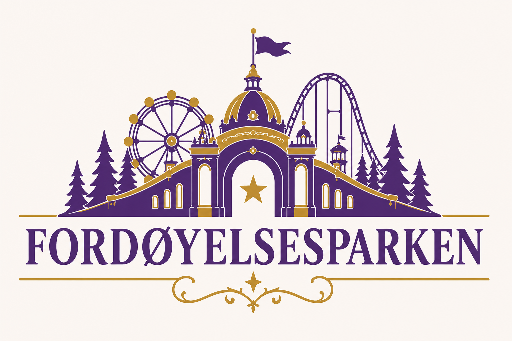

Del II · Logo
DEN OFFISIELLE LOGOEN
Fordøyelsesparken har én offisiell hovedlogo. Den er den faste signaturen som skal knytte alle publikasjoner og opplevelser i universet sammen.

Låst beslutning
Logoens symbol, typografi, proporsjoner og gulldetaljer er faste. Publikasjonens kjernefarge kan variere, men logoens form skal aldri bygges om eller erstattes av en alternativ hovedlogo.
Logoens funksjon
Logoen representerer selve Fordøyelsesparken — ikke én enkelt bok, attraksjon eller karakter. Den brukes som merkevarelogo på tvers av hele universet, mens publikasjonens egen tittel plasseres separat på omslag og tittelsider.